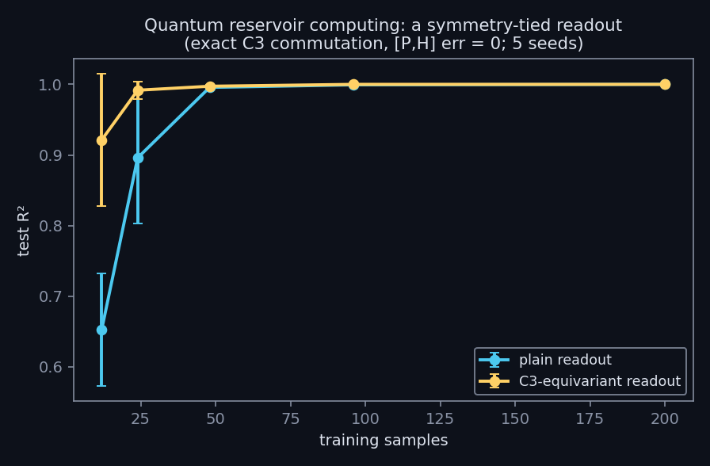

← research · playground · the six-year story · code & logs
A quantum reservoir with a symmetry-tied readout: large sample-efficiency gains in the scarce-data regime, from the same commutant mathematics that makes equivariant quantum neural networks trainable at all.

Equivariant quantum models provably escape barren plateaus because their trainable operators live in the symmetry group's commutant. The same mechanism was demonstrated classically on a quantum reservoir: a honeycomb flake whose quantum feature map exactly commutes with the 120° lattice rotation ([P,H] error = 0), read out either plainly or with C3-orbit pooling, on a rotation-invariant task.
Exact symmetry verified at the operator level before any training; the task built to be learnable but rotation-invariant. An equally important negative was mapped with the same rigor: the reservoir's topological gift did not combine with a learnable readout in classical single-particle simulation across five attempted regimes — that boundary is part of the result, and matches where the hardware experiments succeed.
Part of a ~30-experiment program run under one hard rule: no result is recorded before its run completes. Methods and logs: github.com/dwatces.